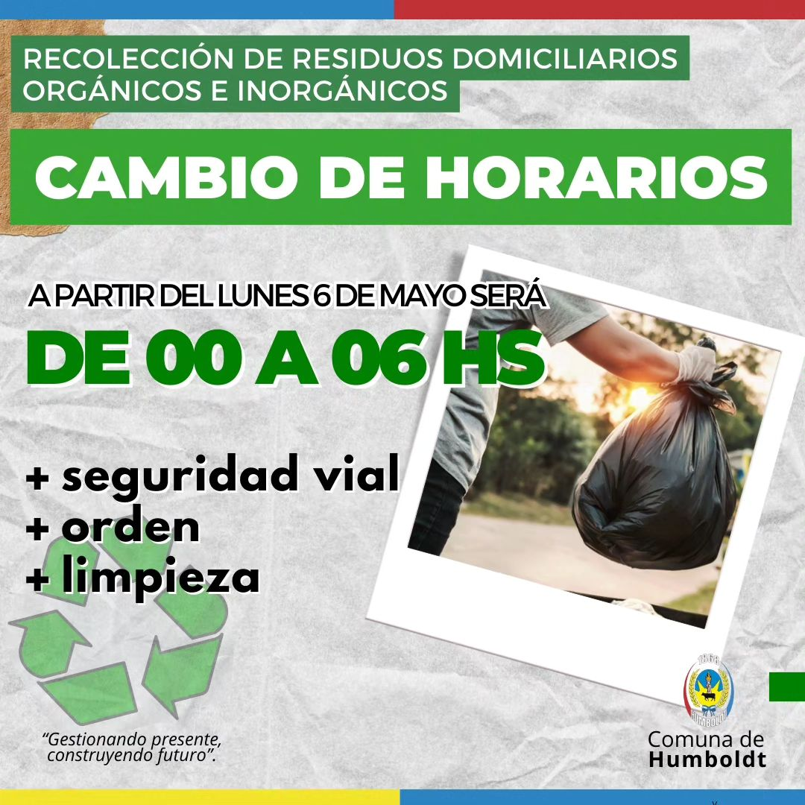
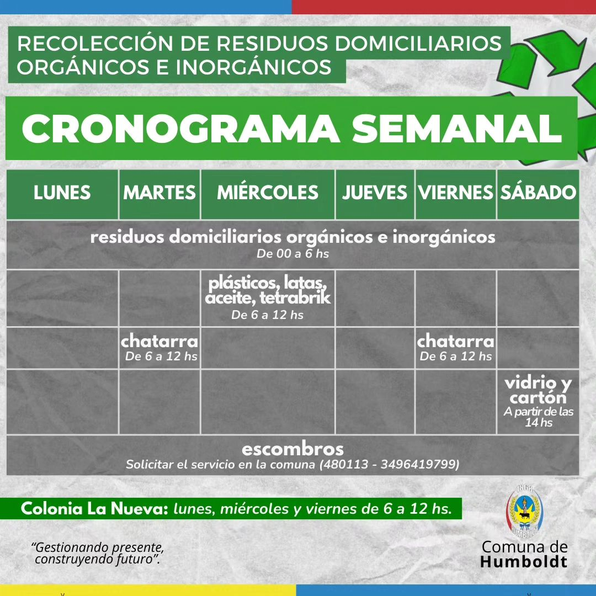

Con el propósito de mejorar la seguridad vial, favorecer el orden y la limpieza de nuestro pueblo, y optimizar la seguridad y las condiciones de trabajo del personal afectado a la tarea, hemos decidido implementar un nuevo horario en la recolección de los residuos domiciliarios orgánicos e inorgánicos.
A partir del Lunes 6 de Mayo, el horario de recolección se extenderá desde las 00:00 hasta las 06:00 de la mañana, por lo que solicitamos a los vecinos sacar sus residuos el día anterior, por la noche.
En cuanto a la recolección de chatarra, plástico, latas de aluminio, aceite, tetrabrik, telgopor, vidrio, cartón, ramas, yuyos, y escombros, se mantiene el servicio en los días y horarios habituales.


Así quedará el cronograma de recolección semanal:
RESIDUOS INORGÁNICOS: Lunes a Sábados de 00:00 a 06:00.
RESIDUOS ORGÁNICOS: Lunes a Sábados de 00:00 a 06:00.
HOJAS SECAS, RAMAS y YUYOS: Lunes a Sábados de 06:00 a 12:00.
CHATARRA: Martes y Viernes de 06:00 a 12:00.
PLÁSTICOS, LATAS, ACEITE, TETRABRIK, TELGOPOR: Miércoles de 06: a 12:00.
VIDRIO y CARTÓN: Sábados a partir de las 14:00.
ESCOMBROS: Solicitar el servicio en la Comuna (3496 480113 - 349641 9799).
COLONIA NUEVA: Lunes, Miércoles y Viernes de 06:00 a 12:00.
Recordemos la importancia de separar, en nuestros domicilios, los residuos orgánicos de los inorgánicos. Cada acción cuenta. Construyamos entre todos, un futuro mejor.